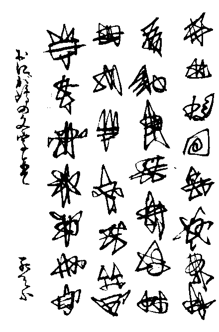
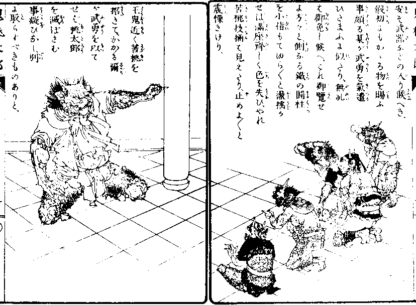
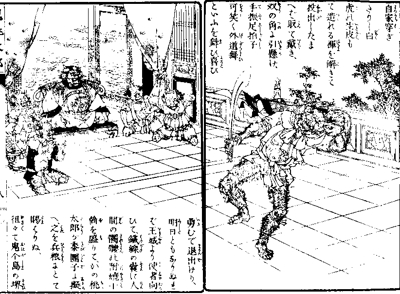
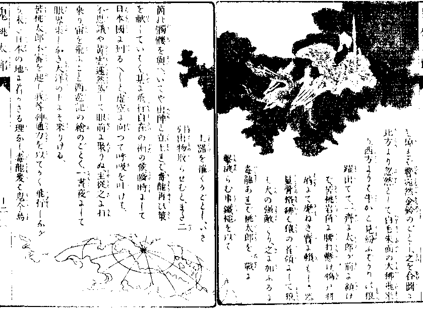
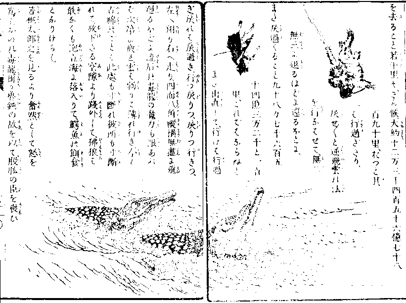
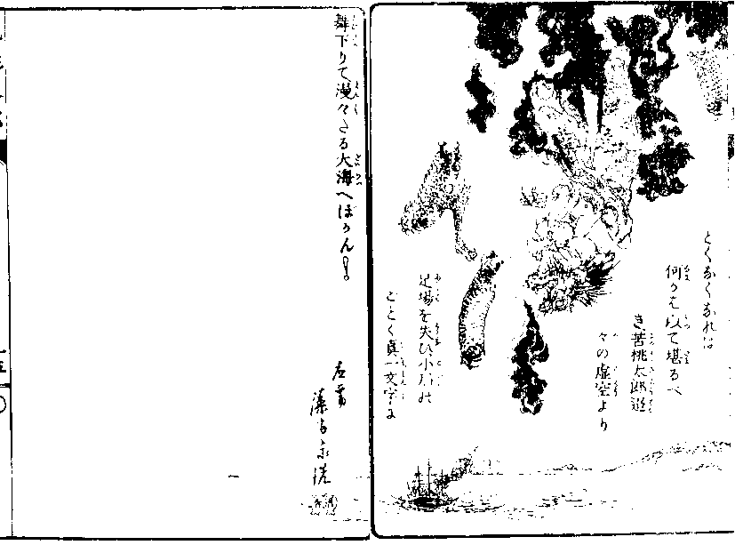

鬼桃太郎
尾崎紅葉


むかし／＼
翁は
山へ
柴刈に、
媼は
洗濯の
河にて、
拾
ひし
桃實の
裏より
生れ
出でたる
桃太郎、
猿雉子犬を
引率して
この
鬼个島に
攻來り、
累世の
珍寳を
分
捕なし、
勝矜らせて
還せし
事、この
島末
代までの
耻辱なり、

あはれ
願はくは
武勇
勝れたる
鬼のあれかし
其力を
藉てなりともこの
遺恨霽さばやと、
時の
王鬼
島中に
觸を
下し、
誰にても
あれ
日本を
征伐し、
桃太郎奴が
若衆首と、
分捕られたる
珍寳
を
携へ
還らむものは、
此島の
王となすべしとありければ、
血氣に
逸る
若鬼輩、ひこ／＼と
額の
角を
蠢かし、
我功名せむと
想はざるはな
けれども、いづれも
桃太郎
が
技※［＃「てへん＋兩」、U+639A、2-15］に
懲り、
我はと
名乘出
づるものもあらざりけり、
 茲
茲に
阿修羅河の
畔に
世を
忍びて、
侘しく
住
みなせる
夫婦の
鬼あり
けり、
もとは
鬼个
島の
城門の
衞司にてあ
りけるが、
桃
太郎攻入の
砌敢なくも
鐵の
門扉を
打摧かれ、
敵軍
乱入に
及びし
條、
其身の
懈怠に
因るものなり
とて、
斜ならず
王鬼の
勘氣を
蒙り、
官を
剥がれ
世に
疎れ、
今は
漁人となつて
餘命を
送るといへども、
何日は
身の
罪を
償うて
再び
世に
出でむことを
念懸け、
子鬼
の
角
の
束の
間も
忘るゝ
間ぞなかりける、さる

ほどに
此觸を
聞く
嬉しさ、
茨木
童子が
斷落されし
我片腕をも
見た
らむ
心地して、
此時なりと
心ばかりは
逸れども、
嚮に
城門の
敗戰に
桃太郎と
亘合
はせ、
五十貫目の
鐵棒もて、
右の
角を
根元より
摧折れた
る
創の
今に
疼むこと
頻りにして、
不治の
疾を
得たりければ、
合戰な
むど
思ひも
寄らず、かゝる
時子だ
にあらばと
頻りに
妻なる
鬼を
罵りぬ、
されば
妻の
言ひけるは、
傳聞く
日本の
桃太郎は、
河に
流れし
桃より
生れて
武
勇拔群の
小兒なり、
尋常なる
鬼胎より
出で
なむ
鬼兒にては、
彼奴が
敵手とならむこと
覺束なし、
妾夜叉神に
一命を
奉げて、
桃太郎
二倍なる
武勇の
子を
祷るべしと、
阿修羅河
の
岸なる
夜叉神社に
參籠し、
三七日の
夜に
して
始めて
靈夢を
蒙り、その
拂曉水際に
立
出でゝ
見れば、いと
大きなる
苦桃一
顆浮波々々と
浮來りぬ、
扨はと
嬉しく
抱還れば、
待構へたる
夫の
喜悦たと
ふる
方なし、
 割
割きて
見れば
果せるかな、
核お
のづから
飛で
坐上に
躍ると
見
えしが、
忽焉其長一丈五
尺の
青鬼と
變じ、
紅皿の
ごとき
口を
開き、
爛々た
る
火※［＃「炎＋稻のつくり」、5-6］を
吐て
矗と
立た
る
其風情、
鬼の
眼にさへ
恐ろしくも、また
物凄くぞ
見えたりける、
苦桃の
裏より
生まれたればとて
苦桃太郎
と
名乘らせぬ、
扨夫婦所志よしを
語りけれ
ば
苦桃大いに
喜び、
易き
事かな、
我一跨に
日本へ
推渡り、
三指にて
桃太が
そつ
首引拔き、
其國の
珍寳の
有らむ
限り
引攫うて
還るべし、

これより
出陣／＼と
勇み
立てば、夫婦
のいふやう、
此條王鬼に
届出でずして
我儘に
出立せば、
或ひは
功
も
功とならずして、
却て
咎のあらむも
測り
難し、
夫婦は
罪を
負ふ
身の
拜謁
はざればとて、
苦桃太郎
單身して
王城に
到らしめ、
桃太郎
征伐の
義を
言上しければ、
王鬼火※［＃「炎＋稻のつくり」、6-6］
を
吐きて
悦ぶこと
限りなく、
八角に
削成
して二百八十八
箇の
銀星打たる
鐵棒を
賜ひ、
爾之を
以て
桃奴が
腰骨微塵に
碎けよとありければ、
苦桃太郎冷笑ひ、
桃太郎風情の
小童十人二十人、
虱を
拈るよりなほ
易きに、
安ぞ
武器などの
入り
候べき、
假初にもかゝる
物を
賜ふ
事頗る
某が
武勇を
氣遣
ひたまふに
似たり、
無礼
は
御免し候へ、これ
御覽ぜ
よ
方々と、
側なる
鐵の
圓柱
を
小指もてゆら／＼と
盪搖か
せば、
滿座齊しく
色を
失ひ、やれ
苦桃技※［＃「てへん＋兩」、U+639A、6-19］は
見えたり、
止めよ／＼と
震慄きけり、

王鬼近く
苦桃を
招きて、かかる
爾
が
武勇を
以て
せば、
桃太郎
を
滅ぼさむ
事疑ひなし、
別
に
取らすべきものありと、
自家穿ぎ
たりし
白
虎の
生皮も
て
造れる
褌を
解きて
投出したま
へば
取て
戴き、
双の
角に
引懸け、
手振足拍子
可笑く
外道舞
といふを
舞ひ、
喜び
勇むで
退出けり、

明日ともなりぬれ
ば
王城より
使者向
ひて、
鐵線の
嚢に
人
間の
髑髏の
附燒十
箇を
盛りて、かの
桃
太郎が
黍團子に
擬
へ、
之を
兵粮にとて
賜はりぬ、
徂々て
鬼个島の
堺
に
來りたる
頃、
魔風遽に
颯々と
吹荒
み、
瀑のごとくに
暴雨沃ぎて
天地鳴
動し、
坤軸も
折るゝかと
想ふばかりなり、
あら
心地好き
光景やと、
少
時立留つて
四方を
屹と
見てあ
れば、
魔王嶽の
絶頂に
當りて、
電
光の
閃く
裏に
金色の
毒龍現
はれ、
此方を
目懸けて
［＃「目懸けて」はママ］箭を
射るごとく
飛來る、やあ
小
 賢
賢しき
長虫の
通力立、
寄らば
目に
物
見せむと
刀足［＃「刀足」はママ］蹈鳴ら
して
身構ふる
間に、かの
毒龍舞
下りて
太郎が
前に
蜷屈く
こと十三
卷、
舌を
吐き
首
を
俛れていふやうは、
某は
魔王嶽の
絶頂なる
湖水に
歳久しく
棲める
龍王なるが、
日本の
地に
罷在る
眷族の
蛇類、かの
桃太郎が
家臣なる
雉子の
一類の
爲
に、
食まるゝこと
年々その
数を
知らず、
いかにもして
此遺恨報へさ
ばやと
思ふ
事久しけれど、
孤
獨の
力及び
難く、
無念を
呑で
瞋恚
の
炎
を
吐く
折から、
將軍此度桃太
郎征伐のよしを
聞及び、
願はくは
御手に
隨從して
微力を
竭し、
御威勢を
以て
一族の
積る
恨
みを
散ぜんとて、これまで
御出迎ひ
仕つりぬ、あはれ
御從軍御許あらば、
身の
面目之に
過じとありければ、
苦桃太郎喜悦淺からず、
腰なる
髑髏一個取ら
せて
主從の
契約を
結びぬ、
 爾時毒龍
爾時毒龍のいひけるは、
徃時桃太
郎は
雉子猿犬の
三郎党を
從が
へて、
大勝利を
得し
例に
傚ひ、
將軍も
亦好郎党を
召たま
はずや、
某が
無二の
交を
結
べる
二頭の
勇者あり、も
し
御意あらば
立所に
召寄すべしとの
推
擧に、
千羊の
皮
は
一狐腋に
如かずの
本
文、なまじひ
なる
輩は
却て
足手
纒なれど、
御身が
信じて
一
方の
大將ともなすべき
器
量ありと
せば、
早々
その
者を
召寄せた
まへといふ、
恐多き
申分には
候へども、
類
は
友を
以て
聚まる
の
喩、
其［＃「其」はママ］不肖とい
へども
魔王嶽
の
龍王なり、
凡俗なる
狐狸の
輩
を
友と
せむや、
まづ
召寄
せて
見參
に
入れむ

と、
二振三振尾
を
掉れば
響宛然金鈴のごとし、
之を
合圖に
北方より
忽然として
白毛朱面の
大狒［＃ルビの「おほひし」はママ］飛來
り、
西方よりは
牛かと
見紛ふばかりの
狼
躍出でて、
一齊に
太郎が
前に
額け
ば、
苦桃岩角に
腰打懸け、
鴆の
羽
扇にて
麾ねき、
實に
頼もしき
器
量骨格、
狒［＃ルビの「ひし」はママ］は
猿の
首領にして
狼
は
犬の
強敵たり、
之に
加ふるに
毒龍あれば、
桃太郎を
一戰に
撃破らむ
事、
鐵槌を
以て
土噐を
摧くがごとし、いざ
引出物取らせむと、また
二
箇の
髑髏を
與へ、いでや
出陣と
立上れば、
毒龍再び
策
を
献じていはく、
某に
飛行自在の
術の候、
瞬時にして
日本國に
到るべしと、
虚空に
向つて
呼吸を
吐けば、
不思議や
黄雲遽然蒸して
眼前に
聚りぬ、
主從之に
打
乘り、
宙を
飛ぶこと
西遊記の
繪のごとく、
一晝夜にして
眼界果しなき
大洋の
上にぞ
來りける、

苦桃太郎不審を
起し、
我等神通力を
以てかく
飛行しなが
ら、
未だ
日本の
地に
着かざる
理なし、
毒龍爰は
鬼个島
を
去ること
若干里ぞ、さん候、
大約十二万三千四百五十六億七千八
百九十里、おつと
其
は
行過ぎたり、
戻せ／＼と
逆飛雲の
法
を
行なはせて、
無二
無三に
退るほどに
還るほどに、
また
戻過ぐること九十八万七千六百五
十四億三万二千と一百
里、これではならぬと
また
出直して、
行けば
行過
ぎ、
戻れば
戻過ぎ、
行つ
戻りつ、
戻りつ
行きつ、
左へ
翔り
右へ
走り、
四面八角縱横無盡に
飛
廻るほどに、
流石の
毒龍の
魔力も
限あれ
ば
次第に
疲れ、
雲は
弱りて
薄れ
行き、
今は
古綿のごとく
此處も
寸斷れ
彼所も
寸斷
れて、
放下たる
空隙より
踐外して、
狒［＃ルビの「ひし」はママ］狼は
敢なくも
泡立海［＃ルビの「ふみ」はママ］に
落入りて、
鰐魚の
餌食
となりけらし。

苦桃太郎之を
見るより
奮然として
怒を
爲し、おのれ
毒龍、
爾が
魯鈍の
故を
以て、
股肱の
臣を
喪ひ
たるぞ、
軍陣の
門出に
前
徴惡し、
憎くき
奴
と
拳を
固めて、
毒龍の
眞額
碎けよと
乱
打に
撃ければ
もとより
暴氣
の
毒龍は
發憤の
眼に
朱を
濺き、
金
の
鱗を
逆てたるは
木葉
に
風の
吹ごとし、

やあ
小憎きおのれが
大將面、
いで
龍王が
本事を
見よと、
十間
餘りの
尾を
風車のごとくに
舞
はして、
苦桃太郎を
七卷に
卷裹め、
骨も
微
塵と
固緊くれば、
物々しやと
苦桃太郎、
惣身
にうんと
力を
籠むれば、さしもの
毒
龍弗つと
斷れ、
四段となつ
て
仆るれば、
魔力忽ち
解けて
雲は
吹消すご
とくなくなれば、
何かは
以て
堪るべ
き、
苦桃太郎迢
々の
虚空より
足場を
失ひ、
小石の
ごとく
眞一文字に
舞下りて、
漫々たる
大海へぼかん！

底本：「名著複刻 日本児童文学館 第一集」ほるぷ出版
1976（昭和51）年5月発行
底本の親本：「鬼桃太郎」幼年文學叢書、博文館
1891（明治24）年10月11日印刷出版
初出：「鬼桃太郎」幼年文學叢書、博文館
1891（明治24）年10月11日印刷出版
※表題は底本では、「鬼桃太郎」となっています。
※変体仮名は、通常の仮名にあらためました。
※挿絵は底本に収録されている富岡（藻齋）永洗（1864（元治元）年〜1905（明治38）年）のものを使用しました。
※「苦桃太郎」に対するルビの「にかもゝたらう」と「にがもゝたらう」、「阿修羅河」に対するルビの「あしゆらかは」と「あしゆらがは」、「爾」に対するルビの「なんぢ」と「なんち」、「武勇」に対するルビの「ぶゆう」と「ふゆう」の混在は、それぞれ底本通りです。
※改行及びルビが単語単位ではなく分割されているのは、底本通りです。
入力：田中哲郎
校正：みきた
2018年12月24日作成
青空文庫作成ファイル：
このファイルは、インターネットの図書館、青空文庫（https://www.aozora.gr.jp/）で作られました。入力、校正、制作にあたったのは、ボランティアの皆さんです。
●表記について
- このファイルは W3C 勧告 XHTML1.1 にそった形式で作成されています。
- ［＃…］は、入力者による注を表す記号です。
- 「くの字点」をのぞくJIS X 0213にある文字は、画像化して埋め込みました。
- この作品には、JIS X 0213にない、以下の文字が用いられています。（数字は、底本中の出現「ページ-行」数。）これらの文字は本文内では「※［＃…］」の形で示しました。
|
「てへん＋兩」、U+639A
|
|
2-15、6-19 |
|
「炎＋稻のつくり」
|
|
5-6、6-6 |
|
「てへん＋兩」
|
|
U+639A |